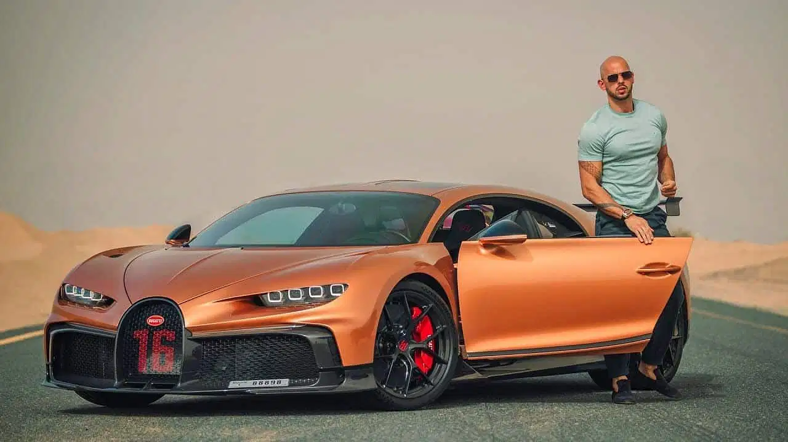

Samochody znajdujące się na stronie
- Bugatti Chiron Andrew Tate'a
- Nissan Skyline R34
- Toyota Supra mk4
- Koenigsegg Jesko
- Mitsubishi Lancer evo X
- Lamborghini Terzo
- Mercedez-Benz G63 AMG
1. Chiron Andrew Tate'a

Posiadanie wartego 5,2 miliona dolarów pojazdu z silnikiem W16 nie jest czymś, czym wiele osób może się przechwalać,
zwłaszcza że ta konkretna jednostka to hipersamochód wyprodukowany tylko w 60 wysoce zindywidualizowanych egzemplarzach.
Obecnie powszechnie przyjmuje się, że pieniądze szczęścia nie dają, ale wydaje się, że można za nie kupić pojazd produkcji francuskiej, który po przyspieszeniu od zera do 100 km/h może osiągnąć prędkość maksymalną 351 km/h ) w zaledwie 2,3 sekundy. W każdym razie te liczby powinny wywołać uśmiech na twarzy przynajmniej na kilka chwil.
Choć wszystko w Pur Sport o mocy 1479 KM (1500 KM) brzmi absurdalnie imponująco, zakup takiego egzemplarza może okazać się nieco rozczarowującym doświadczeniem z nieco dziwnego powodu – limitowana edycja Bugatti jest wolniejsza od „tańszego” odpowiednika. Marka twierdzi, że było to konieczne, ponieważ Pur Sport to hipersamochód przeznaczony na tor, który koncentruje się głównie na dostarczaniu niesamowitych wrażeń z jazdy, podczas gdy przeciążenia mogą wystawiać na próbę całe ciało.
2. Nissan Skyline R34
R34 wszedł na rynek w 1999 roku; w porównaniu z poprzednikiem zostało zmodyfikowane podwozie, zmianom uległy również inne elementy. Bardziej wytrzymały blok N1 GT-R został założony we wszystkich GT-R’ach R34, niestety nękały go problemy z układem smarowania przez zbyt małe kanały olejowe oraz za słabą pompę. Standardowo R34 był zaopatrzony w turbiny ze stalowymi wirnikami. Turbina w R34 N1 została zaopatrzona w łożyska kulkowe. Skrzynia biegów również została wzmocniona. Wałki rozrządu zostały na nowo zestrojone i w dużym stopniu różniły się od tych zamontowanych w RB26DETT z R32. Orurowanie i intercooler zostały dopracowane i ulepszone. Największą cechą i najbardziej znaczącą dla R34 GT-R, której nie było w żadnym innym modelu Skyline, był wyświetlacz na górze deski rozdzielczej o nazwie MFD (Multi Function Display).
3. Toyota Supra mk4
sportowy samochód osobowy produkowany przez japoński koncern Toyota w latach 1978-2002 oraz ponownie od 2019 roku. Do napędu używano wyłącznie benzynowych silników R6 (od 2020 również R4) także z turbodoładowaniem. Moc przenoszona była na oś tylną. Pierwsze dwie generacje oparte zostały na modelu Celica, stąd też nosiły nazwę Toyota Celica Supra. Od trzeciej generacji Supra stała się osobnym modelem. Produkcję czwartej generacji modelu zakończono w Japonii w roku 2002. 14 stycznia 2019 roku oficjalnie zaprezentowano piątą generację Toyoty Supra.
4. Koenigsegg Jesko
Koenigsegg Jesko to limitowany samochód sportowy z silnikiem umieszczonym centralnie, produkowany przez szwedzkiego producenta samochodów Koenigsegg. Samochód został zaprezentowany na Salonie Motoryzacyjnym w Genewie w 2019 r. i został całkowicie wyprzedany przed zakończeniem pokazu. Samochód jest następcą Agery. Nazwa Jesko jest hołdem dla ojca założyciela firmy, Jesko von Koenigsegga.[8] Istnieją dwie odmiany tego samochodu – „Absolut” (prędkość maksymalna) i „Atak” (skoncentrowany na torze).
5. Mitsubishi Lancer Evolution
Pierwsza generacja Mitsubishi Lancera pojawiła się na rynku w 1973 roku, a w Europie w 1974 roku. Firma, zachęcona sukcesami większego brata Lancera – Galanta VR-4 na trasach rajdowych, w roku 1990 zdecydowała się na produkcję zupełnie nowego auta. W kwietniu 2014 roku producent ogłosił zakończenie produkcji, które ma przypaść na rok 2015. Możliwe jednak, że powstanie 11 generacja, która ma być hybrydą. Na razie niewiele wiadomo o Evo XI[1].
6. Lamborghini Terzo Millenio

Terzo Millennio to zaprojektowana od zera maszyna do wyczynowej jazdy, stworzona z ultra lekkich materiałów, całkowicie zoptymalizowana pod kątem wydajności aerodynamicznej. Projekt ten, podobnie jak w Aston Martin Valkyrie, ma być hardcorowym, surowym potworem, w pełni podporządkowanym maksymalnym osiągom. Dzięki silnikom elektrycznym umieszczonym w każdym z czterech kół projektanci mogli pracować na znacznie większej powierzchni, niż byłoby to możliwe w przypadku konwencjonalnego układu napędowego. W rzeczywistości nie ma nic konwencjonalnego w sposobie rozwijania mocy w Terzo Millennio. Kontynuując nieco ograniczone zastosowanie w obecnym Aventadorze, zespół proponuje zastosowanie zaawansowanych superkondensatorów, wbudowanych integralnie w karoserię pojazdu i magazynowania w nich energii. Celem jest nie tylko bardzo wysoka moc szczytowa, dostarczana na wszystkie cztery koła, ale także szybkie ładowanie, efektywna regeneracja za pomocą energii kinetycznej i znacznie wolniejsza degradacja poprzez starzenie się lub zużycie cykli akumulatorów.
7. Mercedes-Benz G63 AMG
Zdecydowanie jest to samochód z serii “niepotrzebny”, ale tak piekielnie fajny i ciekawy, że nie do się go nie lubić, a na pewno trzeba go docenić.Powstał po to, aby jeszcze bardziej zwiększyć terenowe aspiracje standardowej Klasy G, która na bezdrożach i tak radzi sobie świetnie. Nie brakuje mu przy tym ekskluzywności! Wersja G63 sygnowana logiem AMG, oferuje 585 KM z 4-litrowego V8 z podwójnym doładowaniem. Napęd oczywiście płynie na wszystkie 4 koła, a czas potrzebny na przyspieszenie od 0 do 100 km/h to około 5 sekund!
Samochody w Pigułce
|
Buggatti Chiron Andre Tate'a |
Nissan Skyline R34 |
Toyota Supra mk4 |
Koenigsegg Jesko |
Mitsubishi Lancer evo |
Lamborghini Terzo |
Mercedes-Benz G63 AMG |
| wartość |
~5,2 mln $ |
350-600 tys zł |
150-250 tys zł |
ok. 14 mln zł |
80-240 tys zł |
ok. 10 mln zł |
167 tys - 1,3 mln € |
| rok produkcji |
2021 |
1998-2002 |
1992-2002 |
2019 (prezentacja) |
od 1992 |
2017 (prezentacja) |
1990-2018 |